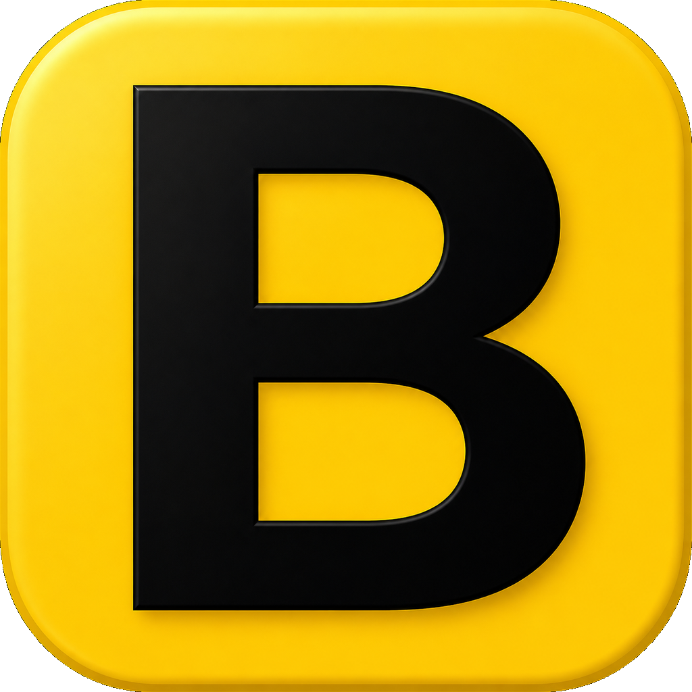

Normal
A clean run from start to target. Learn the map hidden inside Wikipedia.

BlueLinkWIKIPEDIA SPEEDRUN · WINDOWS
Race across the real Wikipedia. Reach the target using only article links—then beat your time, your click count, or the person sitting next to you.
64-bit Windows · Local scores and history · Internet required for Wikipedia
NO SEARCH BAR.
NO BACK BUTTON.
JUST BLUE LINKS.
CHOOSE YOUR RUN
A clean run from start to target. Learn the map hidden inside Wikipedia.
Reach the destination before your limited clicks run out.
Race a countdown and make every page load matter.
Ignore the clock. Find the shortest route you can.
Chase the fastest time with a LiveSplit-style timer.
Face deliberately harder pairings when normal is not enough.
Pass the PC and compete on exactly the same route.
Clear five targets in sequence on one continuous timer.
HOW IT WORKS
BlueLink picks a hard-but-fair start and target from its local challenge data.
Navigate the real English Wikipedia. A completed article transition counts once.
Reach the target, inspect your path, and chase a personal best.
READY?